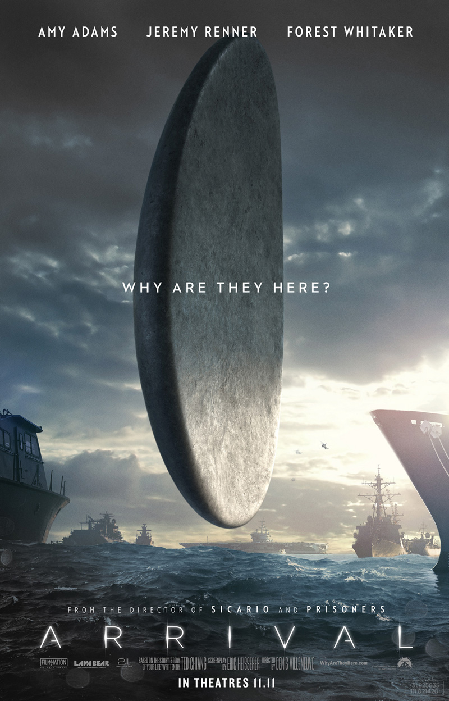

Home
Caíque Isaias
Aluno do Bacharelado em Ciência e Tecnologia, 23 anos.
Vídeo-Apresentação
Livros Favoritos
George Orwell — 1984
Isaac Asimov — Foundation
Filme Favorito

Denis Villeneuve — Arrival
Música
Kevin Penkin — Tomorrow
PDF